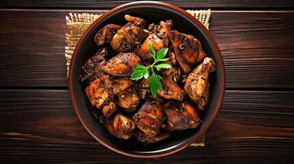

Chicken Adobo

Description
Chicken adobo is a beloved traditional comfort dish from the Philippines. The chicken is braised in a savory blend of soy sauce and vinegar, infused with aromatics such as garlic, peppercorns, bay leaves, and other additions depending on personal preference. The result is a rich, bold flavor profile — salty, tangy, and slightly sweet with a gentle kick of heat. Despite its complex taste, Filipino chicken adobo is a surprisingly simple and straightforward dish to prepare.
Engredients
- Chicken: A mix of boneless/skinless thighs and drumsticks works best here. This combination is classic for chicken adobo and what I'd recommend. Check the notes for alternative cuts.
- Garlic: A powerhouse ingredient and cornerstone of this dish — yes, the recipe calls for a full 12 cloves, and every single one is worth it!
- Scallions: Also known as green onions, these pull double duty — they add aromatic depth to the marinade and brighten up the finished dish as a garnish.
- Black peppercorns: These bring a subtle heat to every bite. Because they're left whole rather than ground, they deliver little bursts of spice throughout, while also balancing out the salty and tangy notes from the vinegar.
- Brown sugar: Just a small amount to round out the flavors and bring a gentle sweetness to the dish.
- Rice vinegar: A mild, slightly sweet vinegar fermented from rice. The recipe uses unseasoned rice vinegar — no added salt or sugar — since the soy sauce already provides plenty of saltiness.
- Distilled vinegar: Your everyday pantry vinegar with a sharper, more pronounced sourness compared to rice vinegar.
- Soy sauce: One of the key liquids that forms the base of the sauce. Low-sodium is recommended to keep the saltiness in check.
- Bay leaves: A fragrant herb that lends a subtle, earthy flavor — especially lovely in slow-braised dishes like this one.
- Olive oil: Used to sear the chicken to a golden brown before braising.
Steps
- Marinate the chicken. Place the chicken pieces in a bowl with all the liquids and aromatics, then cover and refrigerate for at least 2 hours — overnight gives the best results.
- Brown the chicken pieces. Searing the chicken is key to building deep, rich flavor. This step triggers the Maillard reaction, creating a caramelized crust that dramatically enhances the overall taste.
- Pour in the marinade. Once the chicken is nicely browned, pour in the reserved marinade and bring it to a gentle boil.
- Add the chicken. Return the browned chicken pieces to the pot, nestling them into the sauce.
- Low and slow. Let everything simmer for 30 minutes, then flip the chicken and continue cooking for another 30 minutes on the other side until the sauce has reduced and thickened.
- Serve it up! Dish out the chicken adobo over steamed jasmine rice and enjoy!
Home